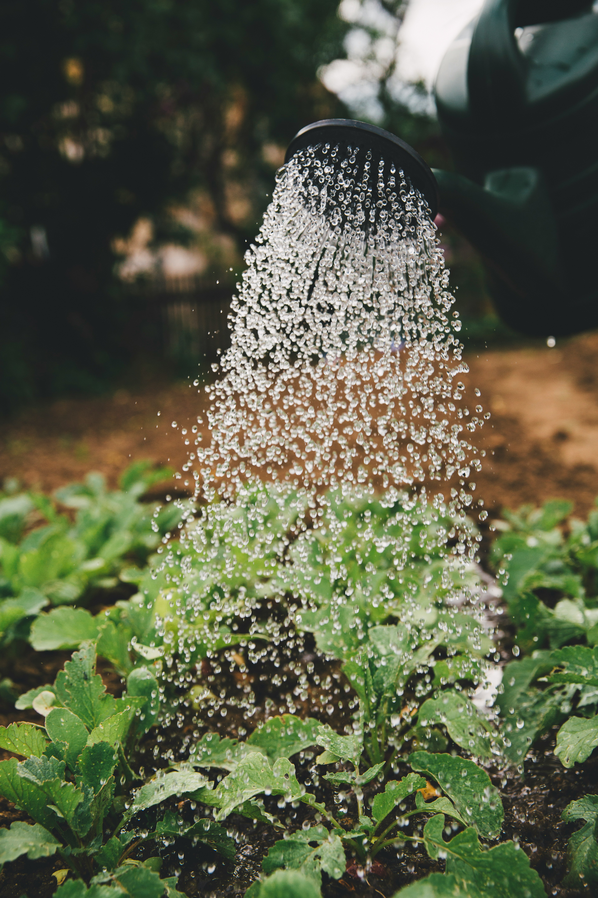
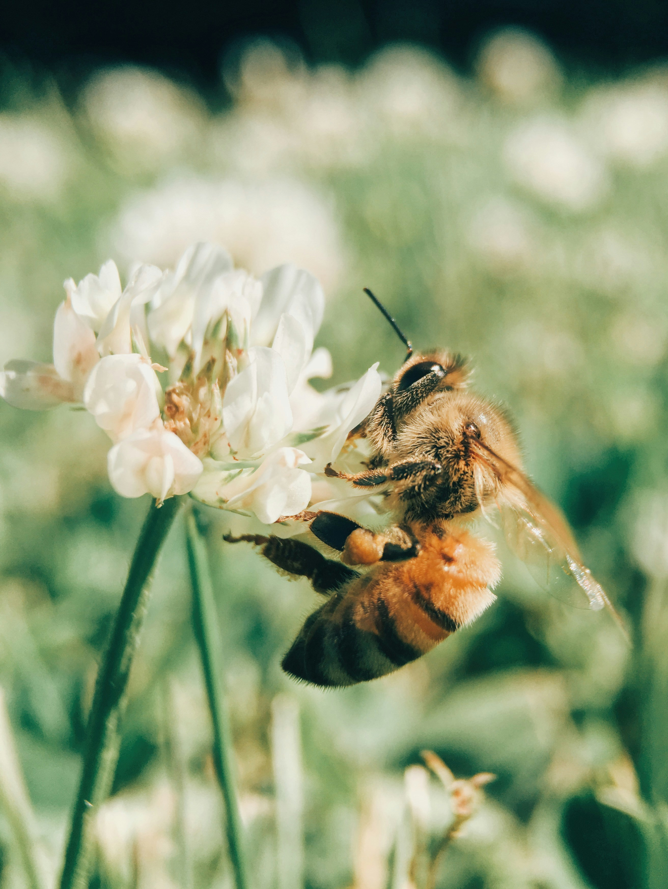

Sustentabilidade no Agro: Produzir e Preservar
Conheça como a agricultura sustentável, a tecnologia e a preservação ambiental trabalham juntas para garantir alimentos de qualidade e um futuro melhor para as próximas gerações.
Explorar Temas
Conheça como a agricultura sustentável, a tecnologia e a preservação ambiental trabalham juntas para garantir alimentos de qualidade e um futuro melhor para as próximas gerações.
Explorar Temas
A sustentabilidade no agronegócio consiste em produzir alimentos, fibras e matérias-primas de forma responsável, garantindo que os recursos naturais continuem disponíveis para as futuras gerações. Esse conceito busca equilibrar desenvolvimento econômico, preservação ambiental e bem-estar social.
Atualmente, o desafio é produzir cada vez mais alimentos para uma população mundial em crescimento sem comprometer a qualidade do solo, da água, do ar e dos ecossistemas. Por isso, práticas sustentáveis vêm ganhando cada vez mais espaço dentro e fora do campo.

A água é um recurso indispensável para a agricultura e para a sobrevivência de todos os seres vivos. Grande parte dos alimentos consumidos diariamente depende diretamente dela. Por esse motivo, utilizar a água de forma eficiente é uma das prioridades da agricultura sustentável.
Tecnologias modernas permitem monitorar a umidade do solo e irrigar apenas quando necessário, reduzindo desperdícios e preservando recursos hídricos. Além disso, a proteção de nascentes, rios e matas ciliares contribui para manter a qualidade da água.
Cada gota economizada contribui para um futuro mais sustentável e para uma melhor qualidade de vida para toda a população.
O solo é a base da produção agrícola. Ele fornece nutrientes, água e sustentação para as plantas crescerem. Quando ocorre erosão ou perda de fertilidade, a produção de alimentos é diretamente afetada.
Técnicas como plantio direto, rotação de culturas e cobertura vegetal ajudam a proteger o solo, melhorar sua fertilidade e aumentar sua capacidade de retenção de água, garantindo colheitas mais produtivas e sustentáveis.
Um solo saudável significa mais alimentos, menos degradação ambiental e mais qualidade de vida para as futuras gerações.


A preservação ambiental é fundamental para manter o equilíbrio dos ecossistemas. Florestas, rios, animais e plantas exercem funções importantes para a agricultura, como a proteção da água, a regulação do clima e a polinização.
Muitos produtores rurais adotam práticas sustentáveis, preservando áreas nativas e recuperando regiões degradadas. Essas ações mostram que é possível produzir alimentos sem abrir mão da proteção da natureza.
Quando preservamos a natureza, garantimos melhores condições de vida para todos os seres vivos e para as futuras gerações.
A tecnologia está transformando o agronegócio. Drones, sensores, satélites e sistemas de inteligência artificial ajudam produtores a monitorar lavouras com precisão, reduzindo desperdícios e aumentando a produtividade.
Essas ferramentas permitem utilizar menos água, fertilizantes e defensivos agrícolas, tornando a produção mais eficiente e sustentável. Além disso, ajudam a identificar problemas rapidamente e evitam prejuízos.
A tecnologia é uma das principais ferramentas para construir um futuro mais sustentável e produtivo.


As mudanças climáticas afetam diretamente a agricultura. Secas prolongadas, chuvas intensas e temperaturas extremas podem comprometer a produção de alimentos e gerar prejuízos para produtores e consumidores.
Para enfrentar esses desafios, o agro vem investindo em práticas sustentáveis, como recuperação de áreas degradadas, agricultura de baixo carbono e uso de energias limpas.
Pequenas ações realizadas diariamente ajudam a combater os impactos das mudanças climáticas e contribuem para um planeta mais saudável.
A biodiversidade representa a variedade de seres vivos existentes no planeta. Ela é essencial para o equilíbrio dos ecossistemas e para a produção de alimentos.
Abelhas, borboletas e outros polinizadores desempenham um papel fundamental na reprodução das plantas. Sem eles, muitas culturas agrícolas teriam sua produção drasticamente reduzida.
Proteger a biodiversidade significa proteger a vida, a agricultura e o futuro da humanidade.


As energias renováveis têm ganhado cada vez mais espaço no meio rural. Fontes como energia solar, energia eólica e biogás ajudam a reduzir custos e diminuem a emissão de gases poluentes.
Além dos benefícios ambientais, essas tecnologias proporcionam maior independência energética aos produtores e contribuem para o desenvolvimento sustentável.
Quanto maior o uso de energias limpas, menores serão os impactos ambientais e melhor será a qualidade de vida das futuras gerações.
A sustentabilidade no agro demonstra que é possível produzir alimentos, gerar empregos, desenvolver a economia e, ao mesmo tempo, preservar os recursos naturais. A união entre tecnologia, responsabilidade ambiental e participação da sociedade é essencial para garantir um futuro equilibrado.
Cada pessoa pode contribuir por meio de pequenas atitudes diárias. Quando governos, produtores, empresas e cidadãos trabalham juntos, tornam possível construir um mundo mais sustentável, saudável e próspero para todos.